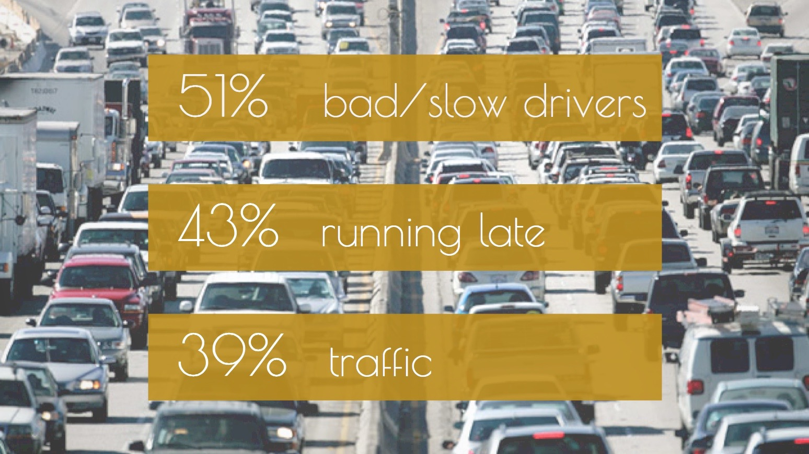

In 3 weeks, redesign the commute experience for medium-distance commuters assuming autonomous cars are the common method of transportation. This was part of CS377D: Designing Calm under the d.school, Stanford's Institute of Design.
Collecting Data
Two other Stanford students and I set out to tackle this broad design challenge by scoping for information and interviewing commuters. To see what challenges commuters in general faced and amass as much user data as possible, we sent out a survey and publicized it on social media platforms.
In it, we asked participants to imagine a world without commuting, leaving the involvement of autonomous cars a secret to avoid biasing their answers. Then, we inquired what activities they would want to do if given more time in the morning to see what mattered to people in the time between waking up and driving to work. We also asked participants to provide a description of their commute experiences, both positive and negative, to clue us in on which experiences to enhance and which ones to rectify.
Research Findings
Over 200 commuters participated in our survey over the course of 1 week, and based on their responses, we categorized the top three stressors or challenges commuters faced when driving. 51% of participants mentioned negativity towards bad drivers, 43% expressed stress about running late for work, and 39% mentioned struggles with traffic.
Our second insight was that given extra time in the morning, 75% of commuters would sleep in, with other response such as "watch the news," "eat breakfast," or "exercise."

Our final step in conducting preliminary research was to interview real commuters about their transportation experience. It was time to get our hands dirty in the actual field, the field of the people we were trying to design for.